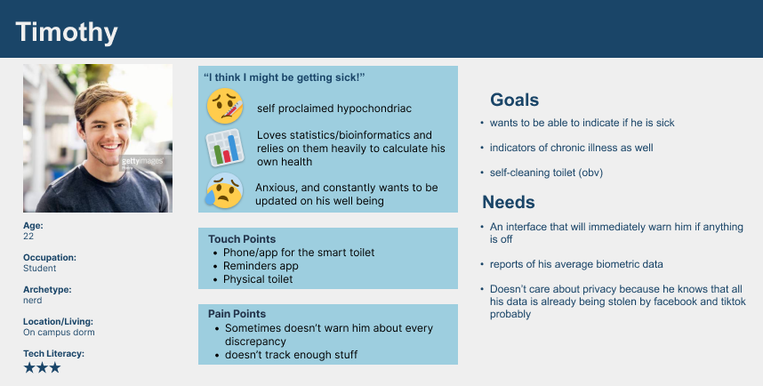

Smart Toilet UX Research
Health tracking and illness prevention via speculative smart toilet technology
Overview
This was the final project I completed for my UX Research Methods class to learn the basics of the UX research and design process, such as conducting interviews and surveys, and using research insights to inform user personas, journey mapping, and ultimately a design prototype.
What is a Smart Toilet?
The term smart toilet refers to the integration of novel technology with conventional toilets. I am focusing on toilets that can measure health parameters and has health monitoring capabilities. Since this project was more speculative, the smart toilet capabilities were not limited to current health tracking technology that exists today. This allowed for heightened creativity but also challenged me to create prototypes for complex data and information that I was not familiar with.
Read about the smart toilet research this project was based onThe Prompt
University X is interested in placing Smart Toilets throughout campus for post pandemic health related reasons and beyond/including tracking public health, student health, covid and other viruses, hydration and nutrition for all students.
The Goal
Develop a customer facing interface that can be accessed from a kiosk or mobile device based on the research findings from interviews, surveys, and secondary research.
The Research Methods
There was a lot we needed to learn about our users for this project, such as health practices, familiarity with biometric tracking and health technology, privacy preferences, and what they consider ideal smart toilet capabilites.
We interviewed 10 students and created a survey that was shared on social media. Interviews lasted approximately and hour and collected more detailed and elaborate feedback.
In the interviews we asked opened ended questions about health and health tracking habits, privacy, and technological use to get a better understanding of how technology has been integrated into health practices. During the interviews we also did open and closed card sorting games in which interviewees sorted terms based on relation. This assisted in later design processes such as content organization. See full documentation here.
The survey collected more quantitative feedback from a larger population.
The survey was multiple choice and focued on questions like demographics, levels of comfort with health technology and virtual healthcare, and frequency of biometric tracking. In total there were 70 responses. Since we were a little pressed for time in this research we accepted answers from those who were not students as well so we had enough infromation to inform our designs.
Research Insights
Privacy
Health data is very personal, so privacy is a serious concern for most users. We recieved quite a few comments about the intimacy of using the restroom, as well as serious distrust for smart device companies and data security.
"I'm very wary of providing any personal data to smart devices, regardless of what kind of privacy it might sell on the tin."
Wash U Alum, 18-24
"I do not like smart devices and do not trust the companies that make them with any sort of data security."
Wash U Alum, 18-24
Additionally, when asked on a scale of 1 to 5 how comfortable they would be having a smart toilet use their biometrics to provide personalized health data more than half the participants responded with a 3 or lower.
Key Take Aways:
User's main concern is privacy. Numerous tech companies have fumbled the task of keeping intimate data secure, so users are often skeptical about the amount of control they have over their personal data. Providing simple and clear data privacy standards and allowing users to toggle privacy settings is essential.
Health Data/Biometrics Tracking
This category of responses was primarily helpful in identifying our target users: people who already track their health data using existing technology such as fitness watches, mestrual cycle tracking, etc.
77% of the participants already engage with some sort of health tracking tech.
The remaining 23% were usually skeptical of data tracking and privacy, making the smart toilet a rather undesireable leap into health tracking technology adoption.
Key Take Aways
The easiest audience to cater to will likely be those who already track their health data. Those who do not partake in health tracking for the sake of data privacy are probably even less likely to be accepting of a smart toilet. Brainstorming how a smart toilet might interact with other tracking devices will be useful when prototyping.
Uses
Since this was a speculative project, we gave participants the opportunity to suggest health tracking capabilites they would like (regardless of whether those capabilites could be accomplished with current accesbile technology).
The top responses were:
- Hydration - 73%
- Nutrition - 65%
- Glucose Levels - 40%
- Period Tracking - 38%
- Blood Pressure - 36%
- Pregnancy - 30%
- STD Risk - 30%
Additionally, 54% of participants were interested in tracking "other more advanced health (cancer risk, disease risk)"
Key Take Aways
People are focused on hydration, nutrition, and glucose levels, which are strong indicators of overall health. The significant interest in hydration and nutrition tracking likely stems from the fact that there is a shortage of technology that can track these simply, quickly, and accurately.
Reliability
When handling sensitive and complex data it is extremely important for it to be easily digestable and manageable. This means that the structure and data vizualization should of this app should be recognizable and easy to navigate. In this case, paying attention to the card sorting results and drawing inspiration from other recognizeable health tracking brands is extremely important in making a well designed app.
Applying Research Insights
The next step was to create personas, journey maps, and user stories to clearly envision how actual people might use this app. This was a highly individualized part of the project that allowed me to become extremely experienced in using Figma.
User Personas
User personas are essential in the UX research and design process. They represent fictional, yet realistic, profiles of target users, consolidating data and insights into relatable individuals. Personas help designers empathize with users, understand their diverse needs, and make informed design decisions. By humanizing the user base, personas enable designers to create tailored experiences that align with the preferences, behaviors, and goals of their intended audience, resulting in more meaningful and effective user-centered designs.
Natalia
Natalia's persona represents a group of health concious young people on a college campus. While they do not have any pre-existing health conditions, they do enjoy tracking health data daily, and would likely use the smart toilet to simply keep up to date on their health without having to visit a doctor.

James
James represents a group of people on campus who do have pre-existing medical conditions that need to be tracked and maintained throughout the day. They're busy people that want to be able to keep up with their health via a simple process, such as using the restroom.

Timothy
Timothy is a huge tech head who is worried about his health and constantly believes he has some sort of disease. He would likely be an early adopter of the smart toilet technology, and would likely be excited to have a new method of recieving accurate diagnoses without having to go to the doctor.
User Stories and Journey Maps
User stories and journey maps are crucial components of the UX research and design process. User stories capture specific user scenarios, needs, and goals, providing valuable insights into the user's perspective. Journey maps, on the other hand, visualize the entire user experience, from initial touchpoints to the final goal. Together, user stories and journey maps enable designers to identify pain points, understand user behavior, and create intuitive and seamless experiences that meet user expectations and enhance overall satisfaction. In this instance I combined user stories with jounrey maps to demonstrate the many ways someone might utilize the smart toilet technology.
Prototyping Feature Concepts
For this project each student only had time to focus on one primary feature concept. I chose to create a simple prototype that concentrated on how a smart toilet app would integrate with other health apps (such as diabetes tracking apps, Apple Health, etc).
Brainstorming and Low Fidelity
First, we began with brain storming exercises as a class. We were given prompts for designing specific aspects of the app.

Next was creating a rough low fidelity design of how the smart toilet app might look and interact with its other health app counterparts. These first 3 panels low fidelity mock ups of
- The smart toilet home page
- A specific biometric category page that displays data and who the user is sharing their data with
- A page for adding health data from the smart toilet app to the Apple Health App

The next 3 panels are
- The smart toilet home page
- Another biometric category page
- A page for adding the smart toilet health data to the Apple Reminders app
In addition to these low-fid mock-ups I also did a few other iterations such as: